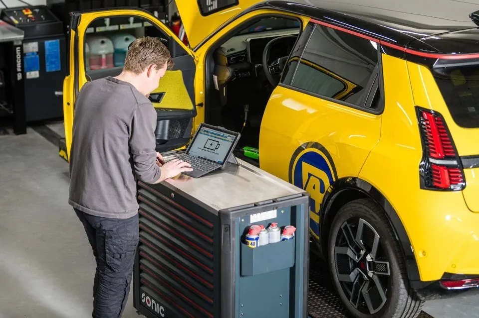

Hulp bij klachten
Rook uit de uitlaat: wat betekent de kleur?
Wat het kan zijn, of u nog kunt doorrijden en wanneer u het moet laten nakijken.
Een beetje damp uit de uitlaat is normaal, zeker bij een koude motor. Blijft het roken, dan zegt de kleur veel over de oorzaak.
Wat kan het zijn?
- Witte damp bij een koude start Condens, vooral bij koud en vochtig weer. Verdwijnt het als de motor warm is, dan is er niets aan de hand.
- Dikke witte rook die blijft Kan wijzen op koelvloeistof die in de motor komt, bijvoorbeeld door een defecte koppakking. Let op de temperatuurmeter en het koelvloeistofpeil.
- Blauwe rook De motor verbrandt olie, bijvoorbeeld door versleten zuigerveren of klepsteeldichtingen, of een turboprobleem.
- Zwarte rook Er wordt te veel brandstof verbrand. Bij een diesel kan het door een verstopt luchtfilter, de turbo of de verstuivers komen.
Kunt u nog doorrijden?
Witte damp bij een koude start is geen probleem. Blijft er rook komen, zeker blauw of dik wit, laat het dan snel nakijken. Loopt de temperatuur op, stop dan.
Wat doen wij?
We lezen de motor uit en zoeken gericht naar de oorzaak. Lees meer over diagnose.